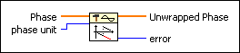

Unwrap Phase VI
Owning Palette: Signal Operation VIs
Requires: Full Development System
Unwraps the Phase array by eliminating discontinuities whose absolute values exceed either pi or 180, depending on the units you specify in phase unit.

 Add to the block diagram Add to the block diagram |
 Find on the palette Find on the palette |